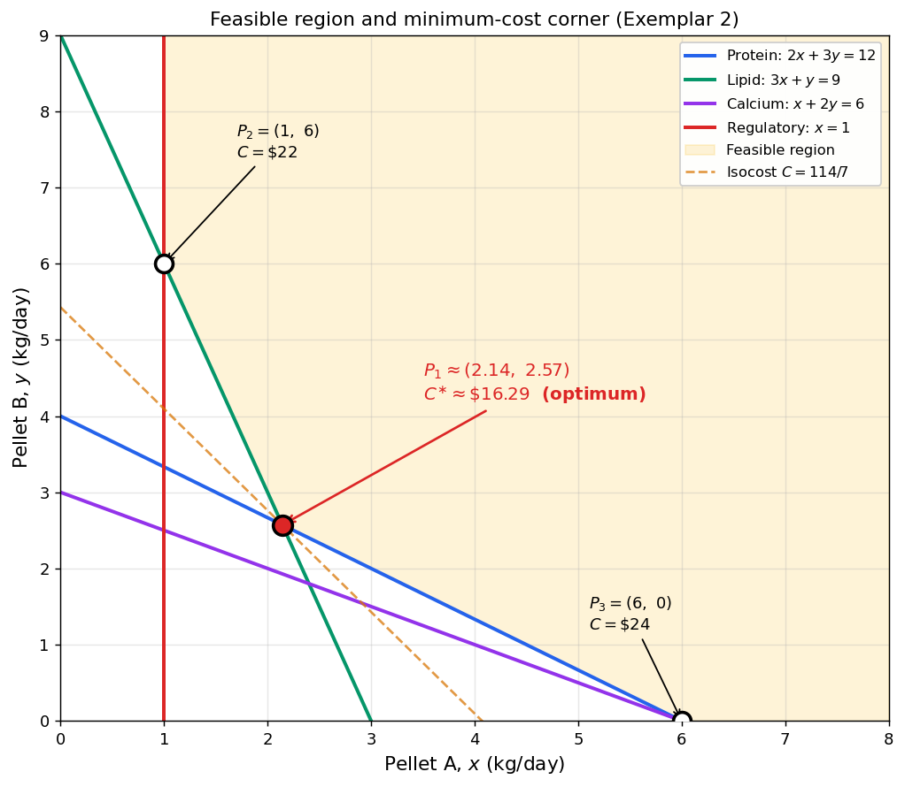

Analytical Methods for Scientists · Semester 1, 2026
This guide is designed to help you study effectively, not to memorise. It does not include practice questions from the paper, because the exam rewards understanding, not recall. If you can confidently tick every Learning Outcome below, you are ready.
| Section | Marks | Format | What it tests |
|---|---|---|---|
| Part I | 72 | 36 multiple-choice × 2 marks | Recognition and single-step skills across all 12 weeks |
| Part II | 48 | 4 long-answer × 12 marks | Setting up, solving, and interpreting larger problems |
| Total | 120 | 2 hours (≈ 1.5 min/MCQ, ≈ 12 min/long-answer) |
MCQs cover all 12 weeks, with a mix of single-topic and integrative questions that ask you to connect ideas across weeks. The coverage is broad rather than concentrated on any single week.
Implication: No week is safe to skip. A week you ignore leaves real marks on the table.
Time pressure: 2 hours is tight. Aim for about 1.5 min per MCQ and 12 min per long-answer, leaving roughly 15 min at the end to revisit flagged questions. Do not get stuck on any single MCQ — flag it and move on.
Four extended problems, each broken into 3–5 lettered parts. Each long-answer problem is integrative — you’ll need to combine skills from several weeks. Typical moves the marker is looking for:
Partial marks are available for correct setup even if the algebra slips. Write down your reasoning.
As announced, you may bring:
You have four sides of A4 — use them well. This is your highest-leverage preparation task. Here is a prioritised list of what most students find useful to write down. You do not need all of it; pick what you are least confident recalling under pressure.
Sheet 1 — Calculus (Weeks 4–7)
Sheet 2 — Models, Probability & Algebra (Weeks 1–3, 8–12)
What is usually not worth writing
Tip: prepare your sheets as you study, not at the end. Every time you look up a formula while working practice problems, copy it onto your sheet. By the end of revision your sheet is effectively your study log.
For each week below, ask yourself: Can I do this from scratch, without notes, in about 2 minutes? Mark each one ✅ / ⚠️ / ❌. Spend your revision time on the ⚠️ and ❌ items.
These are the hinge ideas that appear in the long-answer section. If you only have one day left, focus here.
These cost students marks every year:
Pass 1 — Concepts (1 day). Go through the checklist above. Mark ✅ / ⚠️ / ❌ honestly.
Pass 2 — Skills (2–3 days). For each ⚠️ item, redo one problem from the Student Lab Handbook worksheet for that week without looking at the solution first. For each ❌ item, re-read the weekly lesson and re-watch the concept video before attempting anything.
Pass 3 — Integration (1 day). Under timed conditions: redo the Week 10 mock exam questions; redo one lab worksheet each from Weeks 5, 7, 8, and 12 (these are among the most integrative weeks); and attempt any practice questions in the app that you previously struggled with.
Good luck. You have done the work this semester — this exam gives you a chance to show what you now understand.
These five problems are written in the style, scope and difficulty of Part II of the paper. They are not from the exam. They are designed to let you practise the full workflow:
set up → solve → verify → interpret
Work each one from scratch on paper under timed conditions (15 minutes per problem), then check your solution. If you stall, look at the hint before looking at the solution. Do not read ahead.
Context: optimal nitrogen rate for wheat.
A grower manages N = 40 hectares of wheat and must choose the nitrogen fertiliser application rate x (kg N per hectare, x \ge 0) that maximises profit. Over the relevant range, the per-hectare marginal yield response to nitrogen (in kg of extra grain per kg of N applied) is \frac{dY}{dx} = 30 - 0.5\,x, so the first kilogram of nitrogen gives a large yield boost and each further kilogram gives progressively less. Assume the additional yield at zero N is Y(0) = 0. Nitrogen costs $2.00 per kg applied, and the extra wheat sells for $0.40 per kg.
(a) [3 marks] Write the per-hectare additional-yield function Y(x).
(b) [3 marks] Derive an expression for the total profit \pi(x) from the 40 ha (extra revenue minus nitrogen cost).
(c) [3 marks] Find the nitrogen rate x^* that maximises \pi(x) and verify it is a maximum using the second-order condition.
(d) [3 marks] Compute Y(x^*), the total extra revenue, the total nitrogen cost, and the maximum profit.
Hint: \pi(x) = 40 \times [0.40\,Y(x) - 2\,x]. Take d\pi/dx = 0.
Part (a) — Additional-yield function.
Integrate the marginal response and apply Y(0) = 0: Y(x) = \int (30 - 0.5\,x)\,dx = 30\,x - 0.25\,x^2 + C, \qquad Y(0) = 0 \;\Rightarrow\; C = 0. \boxed{\,Y(x) = 30\,x - 0.25\,x^2 \quad (\text{kg/ha})\,}
Part (b) — Total profit function.
Per-hectare profit is extra revenue minus nitrogen cost per hectare: \pi_{\text{ha}}(x) = 0.40\,Y(x) - 2\,x = 0.40(30x - 0.25x^2) - 2x = 10\,x - 0.1\,x^2. Total profit over the 40 ha: \boxed{\,\pi(x) = 40\,(10x - 0.1x^2) = 400\,x - 4\,x^2 \quad (\text{dollars})\,}
Part (c) — Optimum nitrogen rate.
Stationary point: \pi'(x) = 400 - 8\,x = 0 \;\Longrightarrow\; x^* = 50 \text{ kg N/ha}. Second-order check: \pi''(x) = -8 < 0 \;\Rightarrow\; x^* = 50 \text{ is a maximum.} \;\checkmark
Part (d) — Numerical values at the optimum.
| Quantity | Calculation | Value |
|---|---|---|
| Extra yield per ha | Y(50) = 30(50) - 0.25(50)^2 | 875 kg/ha |
| Total extra revenue | 40 \times 0.40 \times 875 | \$14{,}000 |
| Total nitrogen cost | 40 \times 2 \times 50 | \$4{,}000 |
| Maximum profit | \$14{,}000 - \$4{,}000 | \boxed{\$10{,}000} |
Interpretation: Applying 50 kg N/ha maximises profit. Beyond that rate, the marginal yield response dY/dx has fallen below the cost per kilogram of nitrogen, so each extra kg of N loses money.
Context: aquaculture feed blend.
An aquaculture manager mixes two feed ingredients, Pellet A and Pellet B, in quantities x and y kg per tank per day. Nutrient contents, minimum daily requirements and prices are summarised below.
| Nutrient (per kg of pellet) | Pellet A | Pellet B | Minimum per tank/day |
|---|---|---|---|
| Protein (g) | 2 | 3 | 12 |
| Lipid (g) | 3 | 1 | 9 |
| Calcium (g) | 1 | 2 | 6 |
| Cost ($/kg) | 4 | 3 | — |
In addition, a regulatory requirement specifies that each tank must receive at least 1 kg of Pellet A per day (it carries a medicated additive). The manager wants to minimise daily cost C = 4x + 3y subject to all nutrient and regulatory constraints (and x, y \ge 0).
(a) [2 marks] Write the complete LP formulation.
(b) [4 marks] Sketch the feasible region, labelling all boundary lines and the corner points of the feasible region.
(c) [3 marks] Apply the corner-point theorem to find the minimum-cost feed mix. State (x^*, y^*) and the minimum cost.
(d) [2 marks] Which constraints are binding at the optimum, and which are slack?
(e) [1 mark] Sensitivity. If the cost of Pellet B rises from $3 to $5 per kg (all else unchanged), recompute the minimum-cost mix.
Hint: write each constraint as an equality, find the pairwise intersections, and test only the corners that satisfy all four inequality constraints simultaneously.
Part (a) — LP formulation.
\begin{aligned} \min_{x,y}\quad & C = 4x + 3y \\ \text{s.t.}\quad & 2x + 3y \ge 12 && (\text{protein}) \\ & 3x + y \ge 9 && (\text{lipid}) \\ & x + 2y \ge 6 && (\text{calcium}) \\ & x \ge 1 && (\text{regulatory}) \\ & x,\ y \ge 0. \end{aligned}
Part (b) — Feasible region and corner points.
Boundary lines:
Check each candidate intersection against all four inequality constraints:
| Intersection | Coordinates | Feasible? |
|---|---|---|
| Protein ∩ Lipid | (15/7,\ 18/7) | ✓ P_1 |
| Lipid ∩ x = 1 | (1,\ 6) | ✓ P_2 |
| Protein ∩ Calcium | (6,\ 0) | ✓ P_3 |
| Protein ∩ x = 1 | (1,\ 10/3) | ✗ (lipid: 3 + 10/3 \approx 6.33 < 9) |
| Lipid ∩ Calcium | (12/5,\ 9/5) | ✗ (protein: 10.2 < 12) |
| Calcium ∩ x = 1 | (1,\ 5/2) | ✗ (lipid: 3 + 2.5 = 5.5 < 9) |
The feasible region is bounded below by the three binding-capable constraints (protein, lipid, calcium) and on the left by the regulatory line x = 1. Three corners are feasible: P_1 \approx (2.14,\ 2.57),\ P_2 = (1,\ 6),\ P_3 = (6,\ 0).

Part (c) — Corner-point theorem.
| Corner | x | y | C = 4x + 3y |
|---|---|---|---|
| P_1 | 15/7 | 18/7 | 60/7 + 54/7 = 114/7 \approx \$16.29 |
| P_2 | 1 | 6 | 4 + 18 = \$22.00 |
| P_3 | 6 | 0 | 24 + 0 = \$24.00 |
\boxed{\,(x^*, y^*) = (15/7,\ 18/7) \approx (2.14,\ 2.57)\ \text{kg/tank/day}; \quad C^* \approx \$16.29\,}
Part (d) — Binding and slack constraints at P_1.
Part (e) — Sensitivity to Pellet B price.
New objective C' = 4x + 5y. Re-evaluate the three feasible corners (the feasible region is unchanged):
| Corner | C' = 4x + 5y |
|---|---|
| P_1 | 60/7 + 90/7 = 150/7 \approx \$21.43 |
| P_2 | 4 + 30 = \$34.00 |
| P_3 | 24 + 0 = \$24.00 |
Optimum remains at P_1, new cost \approx \$21.43.
Interpretation: Even a ~67% rise in Pellet B’s price does not shift the optimum. The rule from the corner-point theorem is: the optimum changes only when the isocost line 4x + c_B\,y = C becomes flatter (or steeper) than one of the two constraints binding at the current optimum. At P_1 the binding constraints are protein (2x + 3y = 12, slope -2/3) and lipid (3x + y = 9, slope -3). The isocost slope is -4/c_B. The optimum stays at P_1 as long as -3 \le -4/c_B \le -2/3, i.e. 4/3 \le c_B \le 6. For c_B > 6 the optimum jumps to P_3 = (6,\,0) (drop Pellet B altogether); for c_B < 4/3 it jumps to P_2 = (1,\,6) (use only the regulatory minimum of Pellet A). Since $5 lies inside [4/3,\,6], the mix is unchanged; the cost simply rises from $16.29 to $21.43.
Context: commercial kangaroo harvest on a rangeland station.
A red kangaroo population of size S (animals) on a large pastoral property grows logistically, and is harvested each year by a licensed commercial operator: \frac{dS}{dt} = r\,S\!\left(1 - \frac{S}{K}\right) - H, where r = 0.4 per year is the intrinsic growth rate, K = 500 animals is the rangeland’s carrying capacity, and H is the annual cull quota (animals removed per year) set by the wildlife agency.
(a) [3 marks] Find the maximum sustainable yield (MSY) — the largest constant harvest the population can support at equilibrium (dS/dt = 0) — and the population S_{\mathrm{MSY}} at which it is achieved. Show that \mathrm{MSY} = rK/4 and S_{\mathrm{MSY}} = K/2.
(b) [3 marks] The current population is S_0 = 400. If the agency sets H equal to the MSY from part (a), compute dS/dt at S = 400. Does the population grow or shrink, and toward what long-run level?
(c) [3 marks] Suppose instead the agency wants to hold the population at S = 400 (to keep a viable breeding stock while avoiding overgrazing at K). What annual cull H just achieves that?
(d) [3 marks] Each harvested animal yields a carcass sold for $300. Compute the annual revenue of the industry when the quota is set at MSY. In one sentence, explain why setting H above MSY would eventually collapse the population.
Hint: MSY is the maximum of G(S) = r S\,(1 - S/K), which occurs at S = K/2.
Part (a) — Maximum sustainable yield.
At equilibrium dS/dt = 0 \;\Rightarrow\; H = G(S) \equiv r\,S\,(1 - S/K). Maximise G: G'(S) = r - \tfrac{2rS}{K} = 0 \;\Longrightarrow\; S_{\mathrm{MSY}} = \tfrac{K}{2} = 250\ \text{animals}. Second derivative G''(S) = -2r/K < 0 confirms a maximum. Therefore \boxed{\,\mathrm{MSY} = G(K/2) = \tfrac{rK}{4} = \tfrac{0.4 \times 500}{4} = 50\ \text{animals/year}\,}
Part (b) — Dynamics at S_0 = 400, H = 50.
\frac{dS}{dt}\bigg|_{S=400} = 0.4(400)\!\left(1 - \tfrac{400}{500}\right) - 50 = 160 \times 0.2 - 50 = 32 - 50 = -18\ \text{animals/year}. The population is shrinking by 18 animals/year. Because H = 50 equals MSY, the harvest line H = 50 is tangent to the recruitment curve G(S) = rS(1 - S/K) at S = S_{\mathrm{MSY}} = 250. Setting G(S) = 50 gives S^2 - 500S + 62{,}500 = 0, a perfect square with the single (double) root S = 250. So there is only one equilibrium under this policy. Since G(S) < 50 for every S \ne 250, we have dS/dt < 0 for all S > 250 (and for all S < 250 as well): from S_0 = 400 the population declines monotonically and asymptotically approaches S = 250 from above. This equilibrium is only semi-stable (tangent): any perturbation below 250 would send the population crashing to extinction, so operating at MSY carries no safety margin.
Part (c) — Quota needed to hold S = 400.
H = G(400) = 0.4(400)\!\left(1 - \tfrac{400}{500}\right) = 160 \times 0.2 = 32\ \text{animals/year}. This is less than MSY (32 < 50), as expected: populations above S_{\mathrm{MSY}} have lower recruitment and so support smaller sustainable harvests.
Part (d) — Annual revenue at MSY.
\text{Annual revenue} = 50 \times \$300 = \boxed{\$15{,}000\ \text{per year}}.
Interpretation: Setting H > \mathrm{MSY} initially gives higher returns, but the population falls; once S drops below S_{\mathrm{MSY}} = 250, the now-reduced recruitment can no longer keep up with the same cull and the population collapses — together with the industry that depends on it.
Context: drug clearance.
After an intravenous dose, the plasma concentration c(t) (mg/L) of a drug changes at rate \frac{dc}{dt} = -0.5 + 0.06\,t - 0.003\,t^2 \quad (\text{mg/L per hour}),\qquad t \ge 0. A measurement at t = 2 hours gives c(2) = 7.80 mg/L.
(a) [3 marks] Find the general antiderivative c(t), including the integration constant C.
(b) [3 marks] Use c(2) = 7.80 to determine C and state the particular solution.
(c) [2 marks] Compute c(0) and c(10).
(d) [2 marks] Interpret biologically what the sign of dc/dt at t = 0 and at t = 10 says about how the plasma concentration is changing.
(e) [2 marks] Sketch c(t) on 0 \le t \le 20 hours, indicating the measurement at t = 2 and any interior minimum.
Part (a) — General antiderivative.
c(t) = \int \left(-0.5 + 0.06\,t - 0.003\,t^2\right) dt = -0.5\,t + 0.03\,t^2 - 0.001\,t^3 + C.
Part (b) — Particular solution.
At t = 2: c(2) = -1 + 0.12 - 0.008 + C = -0.888 + C = 7.80 \;\Rightarrow\; C = 8.688.
\boxed{\,c(t) = -0.5\,t + 0.03\,t^2 - 0.001\,t^3 + 8.688 \quad (\text{mg/L})\,}
Part (c) — Values at t = 0 and t = 10.
| t (h) | Calculation | c(t) (mg/L) |
|---|---|---|
| 0 | 0 + 0 - 0 + 8.688 | 8.688 |
| 10 | -5 + 3 - 1 + 8.688 | 5.688 |
Part (d) — Interpretation of the rate’s sign.
| t (h) | dc/dt (mg/L per h) | Biological meaning |
|---|---|---|
| 0 | -0.5 + 0 - 0 = -0.5 | Concentration falling rapidly immediately after dose. |
| 10 | -0.5 + 0.6 - 0.3 = -0.2 | Still falling, but more slowly — clearance is weakening. |
Part (e) — Sketch guidance.
Does an interior minimum exist? Solve dc/dt = 0: -0.003\,t^2 + 0.06\,t - 0.5 = 0 \;\Longleftrightarrow\; t^2 - 20\,t + \tfrac{500}{3} = 0. Discriminant = 400 - 4 \times \tfrac{500}{3} = 400 - 666.\overline{6} < 0 \;\Rightarrow\; no real root.
Therefore dc/dt < 0 for all t \ge 0: c(t) is monotonically decreasing on [0, 20]. The minimum on this interval is at t = 20: c(20) = -10 + 12 - 8 + 8.688 = 2.688\ \text{mg/L}.
Sketch: curve starts at c(0) = 8.688, passes through (2,\ 7.80), and decreases smoothly to (20,\ 2.688).
Learning point: always check whether the stationary point of dc/dt actually lies in your domain. When the derivative is a quadratic function, a negative discriminant means the rate never changes sign and the function is monotonic.
Context: lake nutrient dilution.
A small lake of constant volume V = 2{,}000{,}000 L receives fertiliser run-off carrying nutrient at a steady rate of 5{,}000 mg per hour. The lake is well-mixed (the concentration is uniform everywhere) and drains to a river; drainage removes nutrient at a rate proportional to the current concentration, with proportionality constant 0.05 per hour. Let C(t) denote the nutrient concentration in the lake (mg/L) at time t (hours). The lake is initially clean: C(0) = 0.
(a) [3 marks] Starting from a mass balance on the nutrient in the lake (rate in minus rate out), show that the concentration satisfies \frac{dC}{dt} = 0.0025 - 0.05\,C.
(b) [2 marks] Find the long-run concentration C_{\mathrm{eq}} that the lake approaches as t \to \infty.
(c) [4 marks] Solve the differential equation in part (a) by separation of variables, using the initial condition C(0) = 0, and write C(t) explicitly (no integrals or derivatives remaining).
(d) [3 marks] Compute the time t_{90} at which the concentration reaches 90\% of the long-run value.
Practice note: this problem shares its mathematical structure (linear first-order ODE, separation of variables, exponential approach to a steady state) with the draining-water-tank question on the Week 10 Mock Exam. If you work this one cleanly, revisit the mock paper — you should find the same pattern and very similar algebra.
Part (a) — Mass balance.
Let M(t) (mg) be the total mass of nutrient in the lake. The volume V is constant and the lake is well-mixed, so C(t) = M(t)/V and dM/dt = V\,dC/dt. The mass balance is: \frac{dM}{dt} = (\text{rate in}) - (\text{rate out}) = 5000 - 0.05\,M. Dividing by V = 2 \times 10^6: \frac{dC}{dt} = \frac{5000}{2 \times 10^6} - 0.05\,\frac{M}{V} = 0.0025 - 0.05\,C. \boxed{\,\frac{dC}{dt} = 0.0025 - 0.05\,C \quad (\text{mg/L per hour})\,}
Part (b) — Long-run equilibrium concentration.
At equilibrium, dC/dt = 0: 0 = 0.0025 - 0.05\,C_{\mathrm{eq}} \;\Longrightarrow\; \boxed{\,C_{\mathrm{eq}} = \frac{0.0025}{0.05} = 0.05\ \text{mg/L}\,}
Part (c) — Explicit solution by separation of variables.
In principle we can just separate the ODE directly: \frac{dC}{0.0025 - 0.05\,C} = dt, integrate both sides, and solve for C. That works fine. But the algebra is much cleaner — and the meaning of the answer much more transparent — if we first factor out the coefficient of C. Because 0.0025 = 0.05 \times C_{\mathrm{eq}} (from part (b)), we can rewrite the right-hand side as \frac{dC}{dt} = 0.05\,(C_{\mathrm{eq}} - C). This step is not strictly necessary, but it has two payoffs:
Recognise that pattern once, and you can reuse it for cooling, drug infusion, pollutant dilution, and lake nutrients alike.
Separate: \frac{dC}{C_{\mathrm{eq}} - C} = 0.05\,dt. Integrate both sides: -\ln|C_{\mathrm{eq}} - C| = 0.05\,t + A \;\Longrightarrow\; C_{\mathrm{eq}} - C = B\,e^{-0.05\,t}, where B is a constant to be fixed by the initial condition. Apply C(0) = 0: C_{\mathrm{eq}} - 0 = B \Rightarrow B = C_{\mathrm{eq}} = 0.05. Therefore \boxed{\,C(t) = C_{\mathrm{eq}}\,(1 - e^{-0.05\,t}) = 0.05\,(1 - e^{-0.05\,t}) \quad (\text{mg/L})\,}
Part (d) — Time to 90% of the long-run value.
Set C(t_{90}) = 0.9\,C_{\mathrm{eq}} = 0.045: 0.05\,(1 - e^{-0.05\,t_{90}}) = 0.045 \;\Longrightarrow\; 1 - e^{-0.05\,t_{90}} = 0.9 \;\Longrightarrow\; e^{-0.05\,t_{90}} = 0.1. Take natural logs: -0.05\,t_{90} = \ln(0.1) = -\ln 10 \;\Longrightarrow\; t_{90} = \frac{\ln 10}{0.05} \approx \frac{2.3026}{0.05} \approx \boxed{46.05\ \text{hours}}.
Interpretation: The lake approaches C_{\mathrm{eq}} = 0.05 mg/L exponentially, and reaches 90% of this long-run level after about 46 hours. The mathematical structure here — separation of variables on a linear first-order ODE, giving an exponential approach to a steady state — is the same as the draining-tank problem on the Week 10 Mock Exam. Revisit that paper: you should find the same setup and very similar algebra, even though the physical context is completely different.